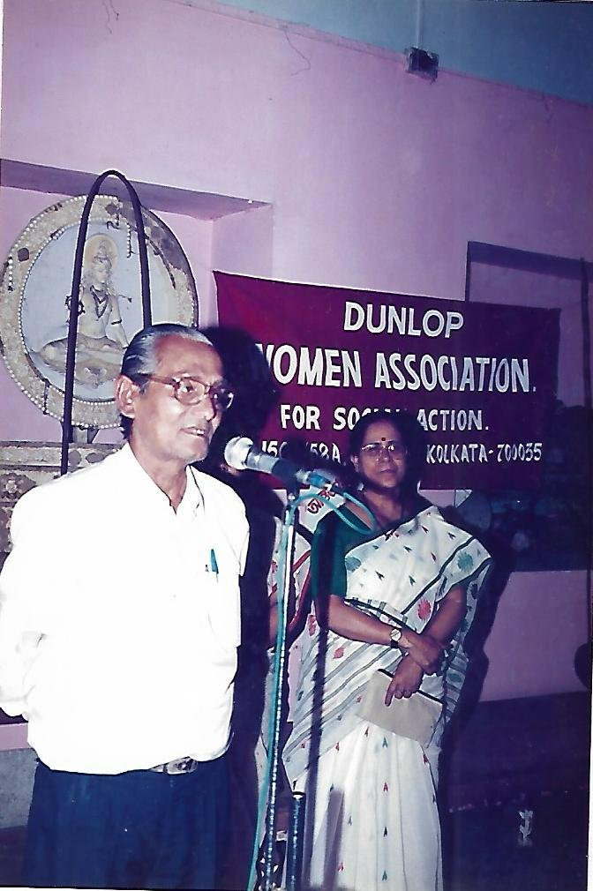

Dunlop Women Association for Social Action (DWASA), founded under the West Bengal Society's Registration Act XXIV of 1961, envisions achieving a women and child-caring society that respects their rights.
Since its establishment in 1989, DWASA has been engaged in the empowerment of women and children in various parts of West Bengal and Jharkhand, making unceasing efforts towards breaking the vicious cycle of poverty and ensuring easy access to the basic rights of protection, education, healthcare, participation and opportunities for a livelihood.
We have successfully been able to design and implement innovative models to improve marginal societies — such as setting up toilets and implementing street lights to ensure the security of marginalised people especially women, children and elderly persons. We work for all kinds of women and children, regardless of gender, origin, or religion, inspired by an underlying ethic of compassion.
Though the organisation started to empower women and children, our main efforts now are to enable poor, marginal and underprivileged persons to become Socio-Economic self-Reliant, Confident, Empowered, Educated, and Dignified in various forms of opportunities, scopes and services.

Registered Office
156A/58A, B.T. Road, Gitanjali Flat-1,
Kolkata – 700108, West Bengal
Branch Office:
Vill: Bhelara, P.O & P.S: Bishnugarh,
Hazaribag, Jharkhand – 825312
Our work aims to break the vicious cycle of poverty and social isolation and to restore hope for a better future. We believe that every person has the right to access resources and opportunities in order to live and develop with dignity and to become an active and contributing member of our society.
DWASA works for the social development and integration of underprivileged individuals, groups, and communities in India — fostering social change and inclusion through sustained, community-led programmes rooted in respect, compassion, and empowerment.
Secretary, DWASA
Established in 1997, DWASA works in various fields of social work. The organisation has been engaged in the empowerment of women and children by providing craft training and educational programmes to promote women's economic and personal independence.
We educate our women in finance, fair trade, sales, and support them on their path to becoming self-sufficient entrepreneurs. We continue to play the role of a catalyst in mobilising and empowering marginalised communities through an increased range of programmes and activities.
View Annual Reports